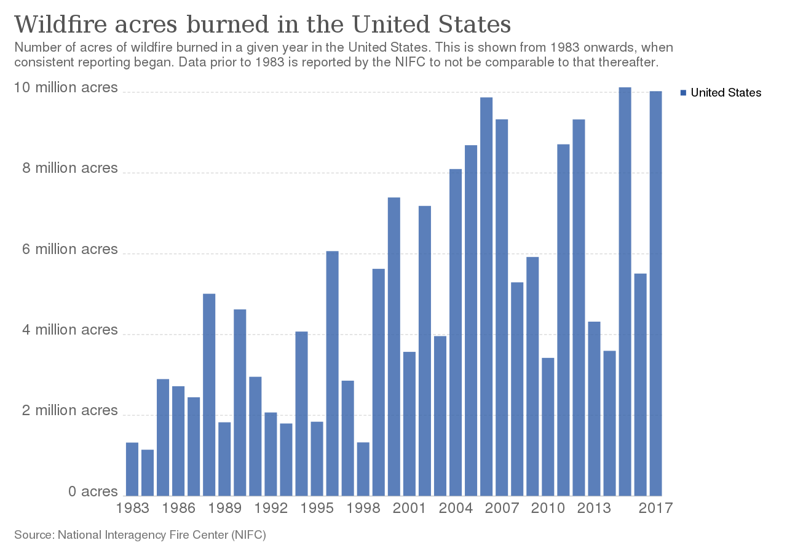

Wildfires are unplanned and unwanted fires, including lightning-caused fires, unauthorized human-caused fires, and escaped prescribed fire projects. Every year since 2000, an average of 72,400 wildfires burned an average of 7.0 million acres. This figure is nearly double the average annual acreage burned in the 1990s.  The Forest Service within the U.S. Department of Agriculture, carries out wildfire management and response across the 193 million acres of the National Forest System.
More wildfires occur in the east and in central states, but the wildfires in the west are larger and burn more acreage.The highest states are Alaska, Arizona, California, Colorado, Idaho, Montana, New Mexico, Nevada, Oregon, Utah, and Washington.
In 2018, nearly 36,200 fires burned 1.7 million acres in the east, compared with nearly 22,000 wildfires that burned more than 7.0 million acres in the west. In the east, where there is less federal acreage, most of the fires occur on nonfederal lands. This is in stark contrast to the west most of the fires occur on federal lands. In 2018, 87% (1.5 million acres) of the acreage burned in the East was on nonfederal land, whereas 63% (4.4 million acres) of the acreage burned in the west was on federal land.
Acreage burned also does not indicate the severity of the wildfire or the degree of impact to the forest, soils, or any other ecological effects. Although wildfires may have a beneficial impact on ecological resources, wildfires also may have a devastating impact, especially for those communities affected by wildfire activity.
Not all forest fires are bad, and many are controlled, prescribed burns to keep the forests healthy and to prevent worse, uncontrolled fires. However, those uncontrolled wildfires have the potential to be very destructive. As this visualizer has shown the destruction caused by out of control should be avoided at all costs. The best way to avoid them is through prevention. Please carefully read these 7 easy steps to do your part in preventing forest fires.
1. Report unattended fires
If you are ever out and about and notice a fire that is burning out of control or is unattended, immediately call 911 or your local fire department . When the conditions are right, even a small campfire can turn into a massive fire. .”See something? Say something,” is one of the key wildfire prevention methods
2. Extinguish fire pits and campfires when done
Many people wonder how to prevent wildfires, but the easiest way is to be careful when having a campfire or using a fire pit. A fire should never be left unattended for any period. Also, when you are done with the fire, then make sure you completely extinguish it. Use water or ashes to put out the flames. Keep tents and sleeping gear away from any fire pit or campfire to ensure you don’t add fuel to the fire . Loose kindling and branches around the campsite can feed the flames. To prevent wildfires, you should tidy up the area to make sure there is nothing that could catch fire from an errant spark.
3. Don’t throw lit cigarettes out of your moving car
Never throw lit cigarettes, smoking materials, or matches out of your car, or on the ground. Cigarettes and matches both have enough heat to create a spark. Make sure any cigarettes are completely extinguished before you throw them in the trash. Many wildfires can start by carelessly flicking a cigarette butt on the ground, especially during dangerously dry conditions.
4. Use caution when using flammable liquids
When using propane to refill stoves, lanterns, or heaters, make sure you use extreme caution. Wait to fill these devices once they have completely cooled. Any flammable liquids can quickly ignite a lantern. Additionally, these should be filled outside rather than inside.
5. Pay attention to local ordinances for trash burning
If you burn your trash, then you need to make sure that you follow your local ordinances. Most areas will have restrictions when it’s windy, or there are dangerous conditions that can spark a wildfire. Make sure to have a fire extinguisher with you when you burn anything so that you can put out the flames if necessary. If you have any flammable materials in your yard, remove them before you burn any trash or rubbish.
6. Only use fireworks in clear areas with no woods nearby
Wildfire prevention techniques can be difficult when most people don't realize the harm involved. For instance, during the 4th of July holiday season, people love sparklers and other fireworks. However, these things should never be used unless there is a wide-open space with no flammable materials nearby. Also, check with your local ordinances as many restrict fireworks altogether.
7. Pay attention to the risk of forest fires in your area
Always check the local forecast to learn about fire safety alerts. The U.S. Forest Service mascot is Smokey The Bear, and there is a risk posted wherever his statue is located near wooded areas. Regions in California and other places around the county post the risk for forest fires daily.
Only YOU can prevent Forest Fires